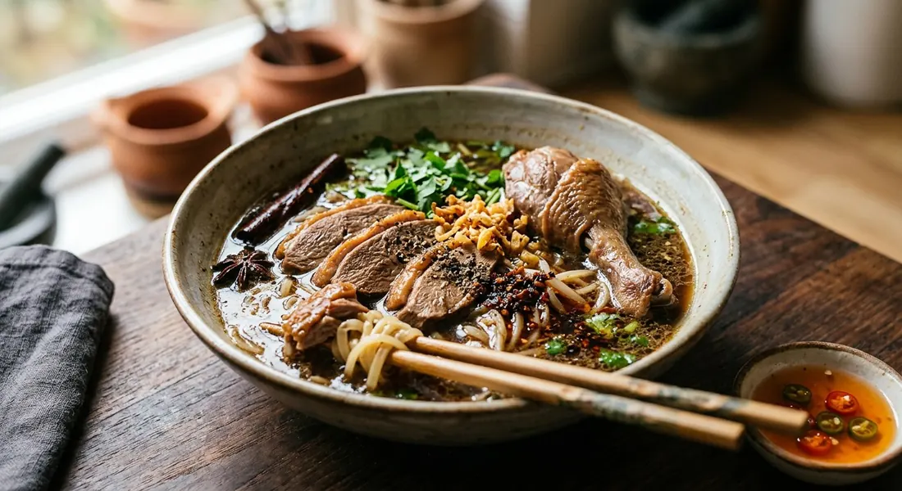

A whole duck braised in a pa-lo five-spice broth until tender, sliced over rice noodles, and finished with fried garlic and a chilli-vinegar dip.

ก๋วยเตี๋ยวเป็ด is duck (เป็ด) noodles (ก๋วยเตี๋ยว), and its engine is พะโล้ — the Thai-Chinese five-spice braise. One pot makes both the meat and the soup: the duck simmers in a cinnamon, star anise, galangal and palm-sugar broth, the bird comes out to be sliced, and the strained, glossy liquid is ladled straight over the noodles. Wongnai's roundup of Bangkok's old-generation duck noodle shops lists stalls that have run for decades — some, like the Bang Rak roasted-duck institution, for over a century — and the recipe below is Wongnai's own home version of the braised school.
The craft is in the spice work. TrueID's selling recipe dry-toasts the cinnamon, star anise, Sichuan pepper and black pepper on a low flame before they ever meet the pot, then bundles them in muslin with galangal, coriander roots and garlic; the home versions follow the same bundle, and Phol-trained cooks and Tukata's Pantip recipe both note the alternative — skip the cloth and let the spices swim free for a heavier scent. The braised broth has its secrets too: TrueID and Aroifin's shop batches add chicken carcass to the duck for body, ครัวตุ๊กตา's home pot gets a whole head of pickled garlic and its brine, and pandan leaves are tied into nearly every pot for sweetness.
Then there is the great timing debate: Tukata's recipe cooks the duck 40 minutes flat — breast-side up for 20, flipped for 20 — warning that any longer and the meat falls apart to mush, while Wongnai and Rin Silpachai hold it on the lowest heat for up to two hours. Both camps agree on the finish: the bird rests before slicing, the broth is skimmed clear, and the bowl gets celery, fried garlic, roasted chilli oil (น้ำมันพริกเผา) and a pounded chilli-garlic-vinegar dip no source will let you skip — the same duck that feeds the family with rice one night becomes noodles the next, as Wongnai's phalo recipe promises.
| Thai | English | Amount |
|---|---|---|
| อกเป็ดและน่องเป็ด | Duck breast and drumstick | 4 pieces |
| กระเทียมบุบ | Garlic, smashed | 2 tbsp |
| พริกไทยดำบุบ | Black pepper, crushed | 2 tbsp |
| รากผักชี | Coriander roots | 3 |
| ผักชีสับหยาบ | Coriander, chopped | 1 cup |
| น้ำตาลทราย | Sugar | 3 tbsp |
| อบเชย | Cinnamon sticks | 5 |
| โป๊ยกั๊ก | Star anise | 6 |
| ข่า | Galangal | 1 piece |
| ผงพะโล้ | Pa-lo five-spice powder | 5 tbsp |
| ซอสปรุงรส | Seasoning sauce | 4 tbsp |
| ซีอิ๊วขาว | Light soy sauce | 4 tbsp |
| ซีอิ๊วดำหวาน | Sweet dark soy | 3 tbsp |
| น้ำเปล่า | Water | 2 L |
| เส้นเล็ก ถั่วงอกลวก | Rice noodles, blanched bean sprouts | as needed |
| ขึ้นฉ่ายซอย กระเทียมเจียว น้ำมันพริกเผา | Chinese celery, fried garlic, roasted chilli oil | to serve |
The smallest home pot (Kapook, ครัวตุ๊กตา): just 2 meaty duck drumsticks in half a pot of water (~5 cups) with a spice bundle, pa-lo powder (cut to 1 tsp if you want less of the five-spice scent), white soy, oyster sauce, sweet dark soy, a whole pickled garlic with its brine and 2–3 pandan leaves — covered, medium-low, about an hour — then vermicelli with kana, bean sprouts, pork crackling with fried garlic, tang chai and pickled chilli vinegar. The whole-duck batch (Kapook, Rin Silpachai; tukata001): one duck, roughly a cup of palm sugar, cups of white soy, oyster sauce and seasoning sauce, nine cinnamon sticks, 25 star anise, fennel, Sichuan pepper and galangal, simmered lowest-heat 1¾–2 hours (or 40 minutes total by tukata's flip method) — the strained liquid becomes the noodle broth. The shop batch (TrueID, Aroifin): for a 40-litre pot, 6 kg duck with 3 kg chicken carcass, 15 L water, 525 g palm sugar, soy, oyster and sweet dark soy, wine, salt, 60 g cinnamon, 21 g star anise, Sichuan pepper, galangal and pa-lo powder, plus optional duck blood — Aroifin's numbers give 678 kcal per bowl (68 g carbs, 29 g fat, 29 g protein).
How long the duck cooks. Tukata's Pantip recipe is firm: 20 minutes breast-side up, 20 flipped, done — "longer than this and the duck falls apart to mush". Wongnai's phalo recipe simmers the same duck about two hours on top of that, and Rin Silpachai holds a whole duck for 1¾–2 hours. The 40-minute duck stays sliceable-firm; the long duck melts.
Bagged or free-swimming spices. Wongnai, ครัวตุ๊กตา and TrueID bundle the spices in muslin so the broth stays clear; Tukata and Wongnai's phalo recipe dump everything straight in — "cook it loose, the fragrance is stronger" — and strain at the end. Same spice list, two schools of clarity.
Sichuan pepper. ชวงเจีย appears in Tukata, TrueID and Aroifin's batches and nowhere in the Wongnai and ครัวตุ๊กตา recipes — Tukata even notes it as optional. The northern-Thai Chinese shops keep it; the home pots usually don't.
Chicken carcass in the duck broth. TrueID and Aroifin's selling batches simmer a kilo of chicken carcass with every 2 kg of duck (3 kg per 6 kg at shop scale) for a rounder broth. The home recipes use duck alone and let the legs do the work.
Duck blood. Aroifin's 60-serving batch includes 500 g of เลือดเป็ด and TrueID offers it "as liked"; the home recipes don't mention it. A shop-batch extra.
Pickled garlic. Only ครัวตุ๊กตา's home pot simmers pickled garlic and its brine into the broth itself; everywhere else the vinegar arrives at the table as the chilli dip.
How much five-spice. Wongnai's recipe uses 5 tablespoons of pa-lo powder; ครัวตุ๊กตา warns home cooks to cut it to a teaspoon unless they love the scent. The powder is the loudest knob in the whole dish.
The greens. ครัวตุ๊กตา adds kana with the bean sprouts; Wongnai and the rest stick to sprouts, celery, coriander and spring onion. Lettuce and Thai basil appear in GopOpOp's leftover-duck version.
This recipe is translated from the following Thai-language sources. Where they disagree, we've said so.
1. Wongnai — "วิธีทำ 'ก๋วยเตี๋ยวเป็ด' เมนูเส้นรสเข้มข้นหวานหอม มัดใจได้อยู่หมัด!" (the recipe used here) — wongnai.com
2. Kapook — "ก๋วยเตี๋ยวเป็ดพะโล้ น้ำซุปเข้มข้นหวานหอมไร้กลิ่นสาบ" by ครัวตุ๊กตา (the smallest home pot with pickled garlic) — cooking.kapook.com
3. Kapook — "ก๋วยเตี๋ยวเป็ด เมนูเส้นกลิ่นหอม พร้อมเสิร์ฟแล้วจ้า" by Rin Silpachai (the whole-duck batch) — cooking.kapook.com
4. Kapook — "วิธีทำเป็ดพะโล้ สูตรตุ๋นยาจีนพร้อมน้ำจิ้มรสเด็ด" by tukata001 (the 40-minute duck) — cooking.kapook.com
5. TrueID — "สูตรทำ ก๋วยเตี๋ยวเป็ดพะโล้ สูตรทำขาย น้ำซุปกลมกล่อม" by Maysylvie (the shop batch, 8 L and 40 L) — food.trueid.net
6. Aroifin — "วิธีทำ ก๋วยเตี๋ยวเป็ด สูตรสร้างอาชีพ" (the 60-serving batch and the per-bowl nutrition) — aroifin.com
7. Wongnai — "วิธีทำ 'เป็ดพะโล้' เมนูอาหารจีนสูตรเด็ด ทำได้ไม่แพ้ร้าน!" (the phalo base and the loose-spice school) — wongnai.com
8. Wongnai (home cook GopOpOp) — "ก๋วยเตี๋ยวเป็ดพะโล้" (the leftover-duck version and vinegar dip) — wongnai.com
9. Wongnai — "10 ร้านก๋วยเตี๋ยวเป็ดเจ้าเก่าเมืองกรุงฯ เนื้อเป็ดนุ่ม น้ำซุปเลิศ!" (the old-shop culture) — wongnai.com